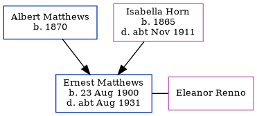

James Charles Matthews 1894 -
[ Home ] | [ Calendar ] | [ Surnames Index ] | [ Census Index ] | [ Family History ]The child of Albert Matthews and Isabella Horn, James Matthews, the second cousin twice-removed on the father's side of Nigel Horne, was born in Ramsgate, Kent, England on Jul 11, 18941,2. He married Ellen Parks in Thanet, Kent, England around Aug 19213. Like his father, he was a mariner. On Apr 2, 1911, he was living at Royal Road in Ramsgate1.
Parents
- Albert was born in 1870
- Isabella was born in 1865
Citations
- 1911 Census for England & Wales - Findmypast (was age 17 and the son of the head of the household)
- England & Wales births 1837-2006 - Findmypast
- England & Wales Marriages 1837-2005 - Findmypast
Media
England & Wales births 1837-2006 - BMD/B/1894/3/AZ/000366/114
England & Wales marriages 1837-2005 - BMD/M/1921/3/AZ/000852/018
Family Tree
Generated by ged2site. Last updated on Jun 11, 2024